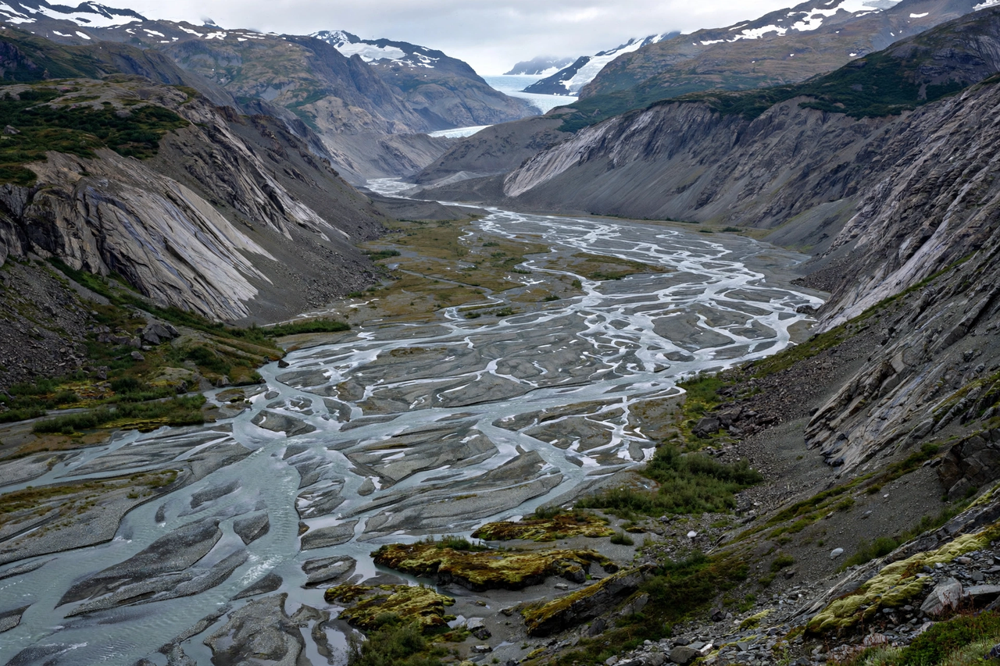

Quaternary
From Wikipedia, the free encyclopedia

The Quaternary is the current and most recent of the three periods of the Cenozoic Era, spanning the last 2.58 million years. It is characterised by cycles of glaciation (the Pleistocene ice ages) and by the evolution and global spread of Homo sapiens. It divides into the Pleistocene (2.58 million–11,700 years ago) and the Holocene (11,700 years ago to the present) epochs.
Climate system
The Quaternary's rhythm — glacial cycles lengthening from 41,000-year to 100,000-year periods (the Mid-Pleistocene Transition) — follows Milankovitch orbital forcing amplified by ice-albedo and carbon-cycle feedbacks, recorded in ice cores, ocean sediments and loess. Ice sheets kilometres thick redrew northern continents; sea level swung by 120 metres.
Life and humans
Megafauna (mammoths, giant sloths, sabre-tooths) dominated and then vanished in the end-Pleistocene extinctions (climate and human hunting both implicated). Within this period hominins made tools, fire, art and language, one species spread to every continent, and in the period's last sliver invented agriculture, cities and geology itself — the science that named the Quaternary and now debates whether to end it with an Anthropocene.